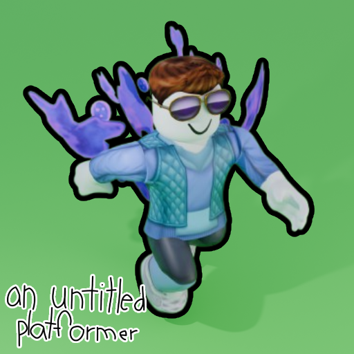

gaem logo
current gaem icon
In the world of Robloxia, Kir are marvelous things.
They may seem like just another collectible, but they are far more important.
A Kir is made out of 2 things - an Inner Kir, and an Outer Kir. The Outer Kir keeps the Inner Kir stay in the air, while the Inner Kir, shaped like a heart, has a very special ability. It is to store love and compassion.
All Kir has a very special purpose - spreading comforting love all around. Without Kir, the world would be without joy.
One day, all Kir got scattered all over Robloxia!
Now it must be you who stops Robloxia from feeling sad and unhappy by collecting all of the Kir!